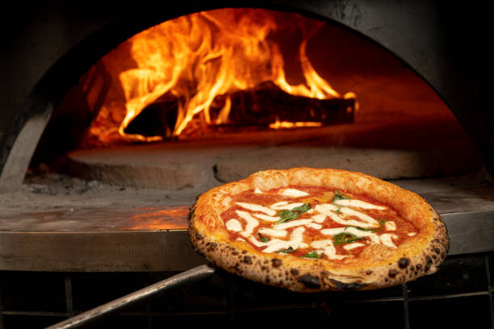

Pizza
w stylu
Neapolitańskim
Czym jest pizza neapolitańska?
Tradycyjna włoska pizza pochodząca z Neapolu. Charakteryzuje się cienkim, elastycznym ciastem, które jest lekko chrupiące na zewnątrz i miękkie w środku. Tradycyjnie wypiekana jest w piecu opalanym drewnem w bardzo wysokiej temperaturze, co nadaje jej wyjątkowy smak.

